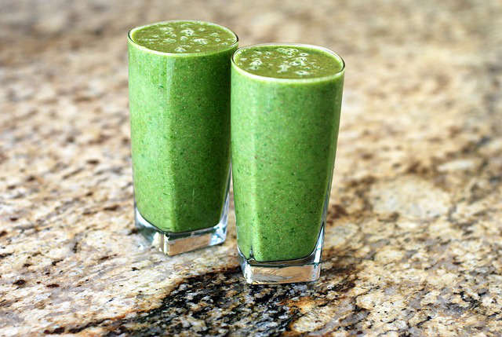

Hulk Load

Hulk Load Shake Recipe
This is a nutrient dense shake that tastes like death but you feel good after. Its like a cold plunge in a shake!
Ingredients
- 2 stalks celery
- 1 bunch kale
- 6 garlic cloves
- lemon juice
- 1 cucumber
- 1 hand of peeled ginger
- 1 apple
Steps
- Add a cup of water to a blender
- Add celery, lemon juice and half the kale
- pulse blender a couple times to break it down
- add the rest of the kale and pulse again
- add apple (cored)
- add in garlic and ginger and pulse
- blend until drinkable
- Drink it before it quagulates